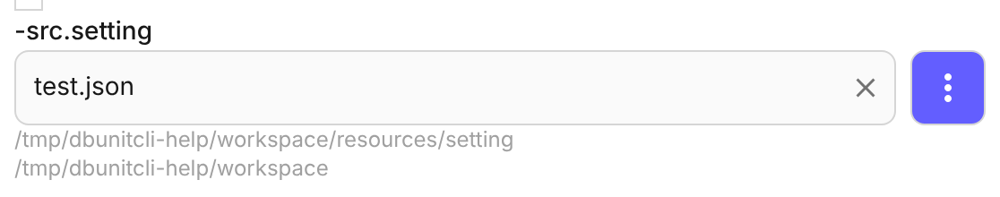
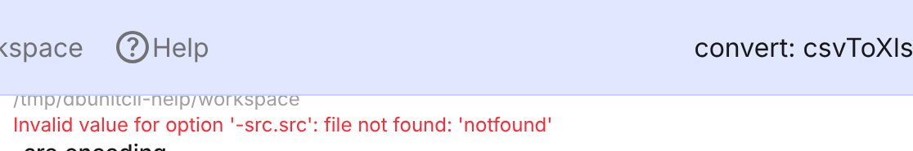
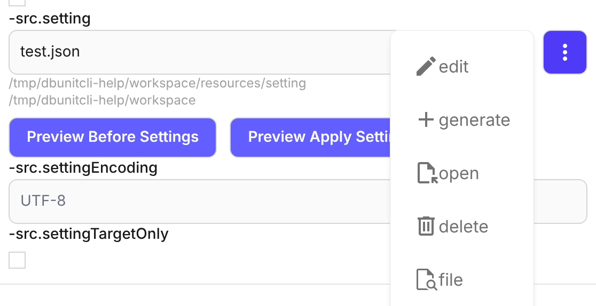
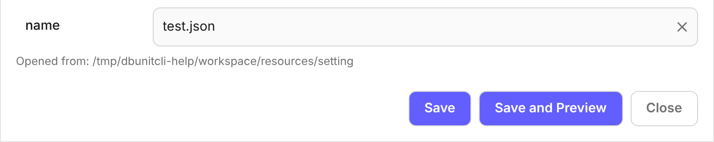
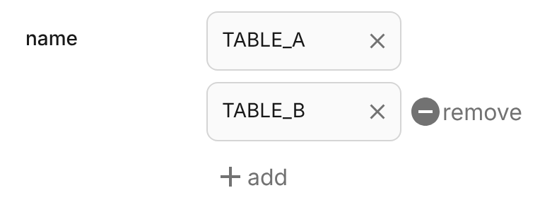
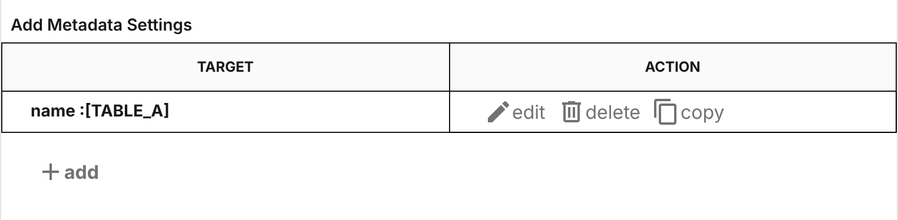
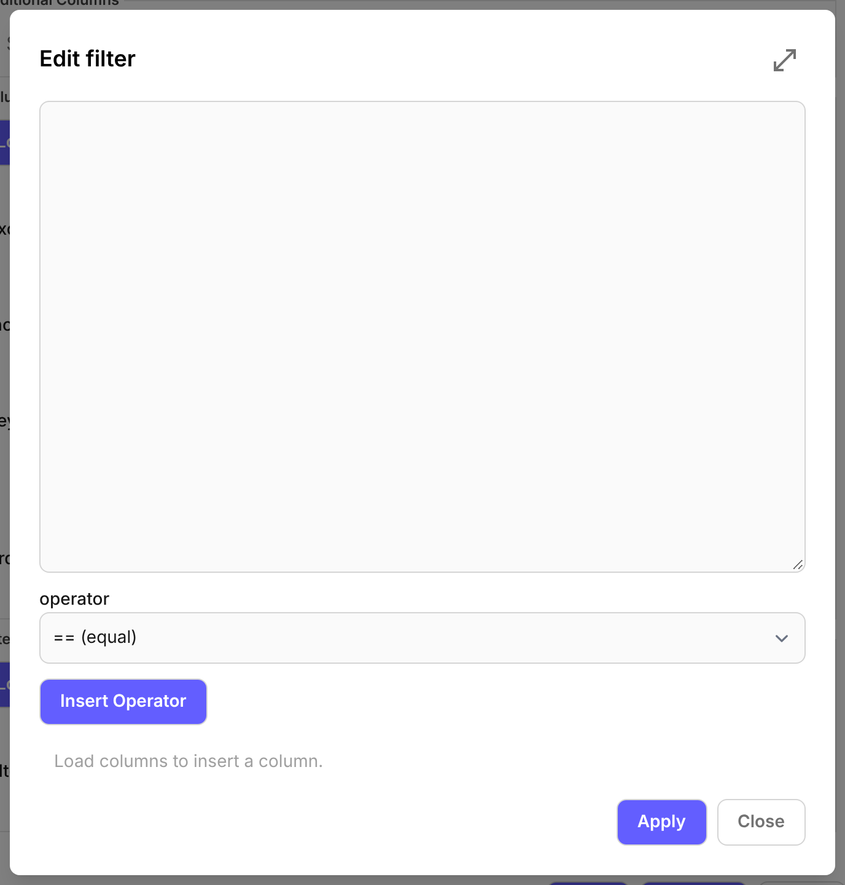

フォームとダイアログのどこでも同じように動く部品のリファレンスです。入力欄、ファイル・ディレクトリの指定、ダイアログの部品の順にまとめています。特定の項目・ダイアログだけにある操作は、それぞれのページを参照してください。


| 表示・操作 | 説明 |
|---|---|
| × | 入力した値を消す。値があるときだけ表示。キーボードの Tab では移動しない |
| 空の入力欄の薄い文字 | 未入力のまま実行したときに使われる値。他の項目や実行環境で決まる場合は、その説明（例: (parameter name)）。値ではないため、保存したオプションには書かれない |
| 入力欄の下の灰色の文字 | 相対パスを探すディレクトリ。1 行目が基準ディレクトリ、2 行目が Workspace（基準ディレクトリと同じなら出ない）。相対パスはこの順に探す。表示する欄は 項目ごとの基準ディレクトリ を参照 |
| 入力欄の下の赤字 | Exec などで見つかったオプションの誤り。入力し直すか、⋮ メニューで選び直すと消える（詳細は Workspace の「フッターの操作」） |
| 候補の一覧 | 入力中の文字に一致する候補。選ぶと値が入る（候補（データリスト）） |
| ⋮ | その欄で使えるボタンのメニューを開く（⋮ メニュー） |
候補は入力の補助です。候補にない値もそのまま入力できます。候補が 1 つもないときは一覧は出ません。
| 候補の種類 | 候補になるもの |
|---|---|
| ファイル名 | 基準ディレクトリの直下にあるファイルの名前（サブディレクトリの中のファイルは出ない）。候補が出る欄は 項目ごとの基準ディレクトリ を参照 |
| テーブル名・シート名・カラム名 | フォームで指定したデータセットから読み込んだ名前。読み込むまでは出ない。読み込むデータセットと操作はダイアログごとに違うため、各ダイアログのページを参照（例: Dataset Setting の Load Columns） |
ファイル名の候補が更新されるタイミング:
| タイミング | 候補の変化 |
|---|---|
| Workspace を開いたとき（起動時・ChangeWorkspace の confirm） | 基準ディレクトリのファイルを読み直す |
| アプリのダイアログで保存・生成したとき | 保存したファイルが加わる |
| ⋮ メニューの delete で削除したとき | 削除したファイルが消える |
| アプリの外（エクスプローラーなど）でファイルを追加・削除したとき | 変わらない。ChangeWorkspace で Workspace を開き直すと反映される |
メニューに出るボタンは、欄の種類と値によって変わります。

| ボタン | 動作 | 表示される条件 |
|---|---|---|
| edit | 入力欄の値のファイルを編集するダイアログを開く。値が空なら新しいファイルを作る。保存すると、そのファイル名が入力欄に入る | 編集ダイアログがある欄 |
| generate | 既存のデータセットから雛型を作るダイアログを開く。保存すると、そのファイル名が入力欄に入る | 雛型を生成できる欄 |
| open | 入力欄の値の場所を開く。ディレクトリはエクスプローラーで、ファイルは関連付けられたアプリで開く。相対パスは基準ディレクトリ・Workspace・起動ディレクトリの順に探す | ファイル・ディレクトリを指定する欄で、値があるとき |
| delete | 確認のうえ、入力欄の値のファイルを基準ディレクトリから削除し、入力欄を空にする | 値がファイル名の候補のどれかと一致するとき |
| file | ファイルの選択ダイアログを開く。選んだファイルのパスが入力欄に入る（選択後に入る値） | ファイルを指定できる欄 |
| dir | ディレクトリの選択ダイアログを開く。選んだディレクトリのパスが入力欄に入る | ディレクトリを指定できる欄 |
ファイル・ディレクトリを指定する欄には、それぞれ決まった基準ディレクトリがあります。相対パスで指定したときに探す起点で、選択ダイアログの開く場所・選んだあとに入る値・候補のもとにもなります。基準ディレクトリは ChangeWorkspace の Workspace / Dataset Base / Result Base で決まります。
「下の表示」は入力欄の下に基準ディレクトリを表示するか、「候補」はファイル名の候補が出るかを表します。
| 項目 | 基準ディレクトリ | 下の表示 | 候補 |
|---|---|---|---|
src（入力データ） | Dataset Base | あり | — |
src（srcType が sql / table / csvq） | <workspace>/resources/sql / table / csvq | — | あり |
result（出力先） | Result Base | あり | — |
setting（Convert / Generate / Parameterize の src など、データセットの読込） | <workspace>/resources/setting | あり | あり |
setting（Compare の比較キーの設定） | <workspace>/option/compare/setting | あり | targetType が data のときあり |
unitSetting（Generate） | <workspace>/option/generate/setting | あり | あり |
template（Generate）/ templateGroup | <workspace>/resources/template | — | あり |
template（Parameterize） | <workspace>/option/parameterize/template | あり | あり |
jdbcProperties | <workspace>/resources/jdbc | — | あり |
xlsxSchema | <workspace>/resources/xlsx-schema | あり | あり |
fixedColumnDef | <workspace>/resources/fixed-column-def | あり | あり |
| 上記以外のファイル・ディレクトリの欄 | Workspace | あり | — |
| 入力欄の値 | 開く場所 |
|---|---|
| （空） | 基準ディレクトリ |
| 絶対パス | その場所 |
| 相対パス | 基準ディレクトリ、Workspace、アプリの起動ディレクトリの順に探し、見つかった場所 |
| 選んだ場所 | 入力欄に入る値 |
|---|---|
| 基準ディレクトリの中 | 基準ディレクトリからの相対パス（例: resources/setting/orders.json を選ぶと orders.json） |
| 基準ディレクトリの外で、Workspace の中 | Workspace からの相対パス |
| Workspace の外 | 絶対パス |
Exec や Save Shell で作った .bat が相対パスをどう解決するかは、Workspace の「実行時のパスの解決」を参照してください。
確定のボタンは、ダイアログの用途によって名前と反映先が変わります。

| ボタン | 動作 | あるダイアログ |
|---|---|---|
| Save | name 欄のファイルに保存し、元の入力欄にそのファイル名を入れて閉じる。保存に失敗したときは開いたまま（name 欄） | ⋮ メニューの edit で開く、ファイルを編集するダイアログ |
| Save | 編集内容を呼び出し元の一覧表の行に反映して閉じる。ファイルには書き込まない（設定一覧表） | 設定一覧表の行を編集するダイアログ（Dataset Setting、Xlsx Row Setting など） |
| Apply | 入力した内容を呼び出し元に反映して閉じる。ファイルには書き込まない | Parameters (-P)（-P 値に反映）、JDBC URL Builder（jdbcUrl に反映）、式の編集（Dataset Setting の行の式に反映） |
| Execute | 入力したデータセットから雛型を生成する。生成後の流れは各ダイアログのページを参照 | ⋮ メニューの generate で開くダイアログ |
| Close | 保存・反映していない編集を捨てて閉じる。元の入力欄・一覧表は変わらない | すべてのダイアログ |
Preview・Export など、ほかのボタンはダイアログ固有の機能です。各ダイアログのページを参照してください。
⋮ メニューの edit で開くダイアログには、保存するファイル名を指定する name 欄があります。
name のファイルに保存するname を変えて Save すると、別の名前で保存する。ない名前なら新しいファイルを作り、ある名前なら上書きする同じ項目に値を複数並べる入力欄（1 行に 1 つの値）と、name と expression を組で並べる入力欄に共通の動きです。

| ボタン・操作 | 動作 |
|---|---|
| add | 末尾に空の行を追加する。最後の行に値があるときだけ表示。値が 1 つもないときは、はじめから空の行が 1 つある |
| remove | その行を消す。1 行目にはないので、1 行目は × で値を消す |
| 値の確定 | 入力欄からフォーカスが外れたときに確定する。空のまま確定するとその行は消える。1 行に 1 つの値の欄では、ほかの行と同じ値は確定せず、入力前の値に戻す |
| expression の入力 | name と組の欄では、name を入力するまで expression は入力できない |
select（カラムをまとめて選ぶ）や edit（式を編集する）は項目ごとの機能です。Dataset Setting などの各ダイアログのページを参照してください。
Dataset Settings・Xlsx Schema・Fixed Column Def などで、複数の設定を Target と Action の表で一覧します。設定の中身は、行のボタンから開くダイアログで編集します。

| ボタン | 動作 |
|---|---|
| edit | その行の設定を編集するダイアログを開く。ダイアログの Save で行に反映する |
| delete | その行を一覧から消す（確認なし） |
| copy | その行の設定を元に編集ダイアログを開く。ダイアログの Save で新しい行として追加する |
| add | 空の設定で編集ダイアログを開く。ダイアログの Save で新しい行として追加する |
そのダイアログのヘルプを別ウィンドウで開きます。同じヘルプのウィンドウが開いている場合は、そのウィンドウを前面に出します。
SQL・テンプレート・式など長い文章を書くダイアログでは、最大化ボタンでダイアログをウィンドウいっぱいに広げ、テキストエリアを広く使えます。もう一度押すと元の大きさに戻ります。

| 最大化できるダイアログ | 開き方 |
|---|---|
| Edit SQL / Edit Table Definition | srcType が sql / table / csvq のとき、src の ⋮ メニューの edit |
| Template File Edit | テンプレートの欄の ⋮ メニューの edit |
| Edit Parameterize Template | Parameterize の template の ⋮ メニューの edit |
| 式の編集（Dataset Setting） | Additional Columns・filter の行の edit |